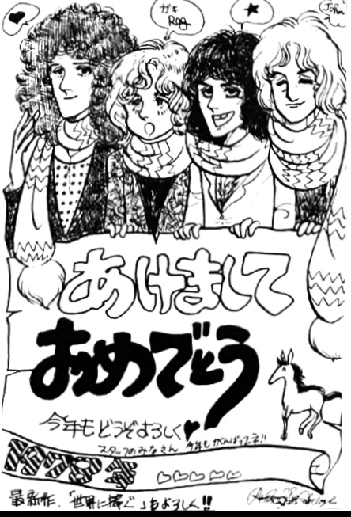
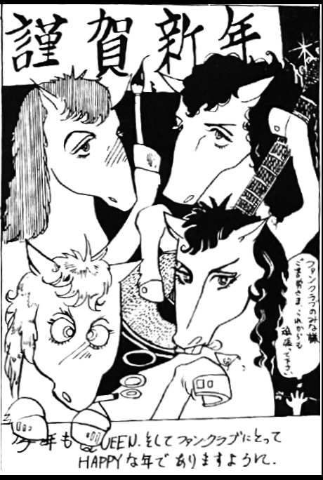

Vol. 12 — Summer 1978

We Will Rock You
Brighton Rock
Somebody to Love
White Queen
Good Old-Fashioned Lover Boy
I'm In Love With My Car
Get Down Make Love
Millionaire Waltz
You're My Best Friend
Spread Your Wings
It's Late
Now I'm Here
Love Of My Life
My Melancholy Blues
White Man
Prophet's Song
Stone Cold Crazy
Bohemian Rhapsody
Keep Yourself Alive
Tie Your Mother Down
Encore I:
We Will Rock You
We Are The Champions
Encore II: See What A Fool I've Been
Sheer Heart Attack
Jailhouse Rock
It seems likely to me that by 1978, White Queen was a misprint and should be Killer Queen, but there's no way to tell unless a tape surfaces. Regardless, it's a murderer's row of songs!
This issue's "News of the Queen" column makes note of the band's focus on America at this time. Japanese fans were hungering to see them again, as the band had not toured there in over two years at this point while touring North America, Europe, England, and Australia, most of them more than once. But since the population of America was several times the size of Japan's, it was no contest from a financial standpoint, and the band would not return to Japan until Spring of 1979. The column also makes note of the Japanese fans' desire to see the BBC documentary air in their country, spurring a letter-writing campaign to NHK.
In the want ads:
To the person who was filiming with 8mm film in the central area of the second floor at the Spring Fan Club Gathering in Tokyo on March 27th, you mentioned that you didn't get a good shot of the opening song We Are The Champtions. But how about everything else...? I was sitting two seats over from you, would you mind showing me the film?
If people were filming at these fan club get-togthers and film concerts held throughout the 70s, I can't help but wonder if footage might surface someday...
